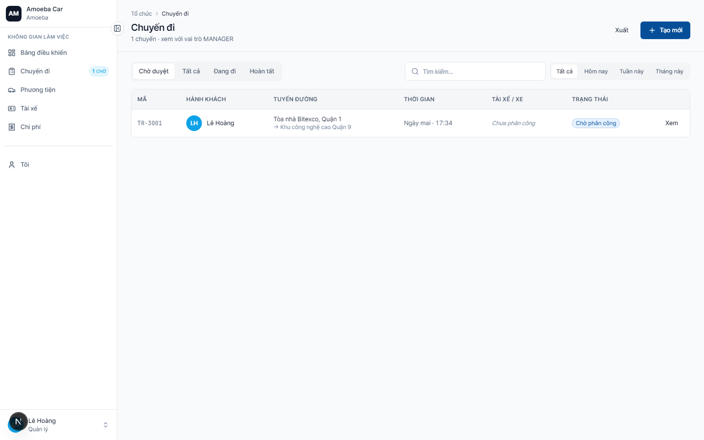
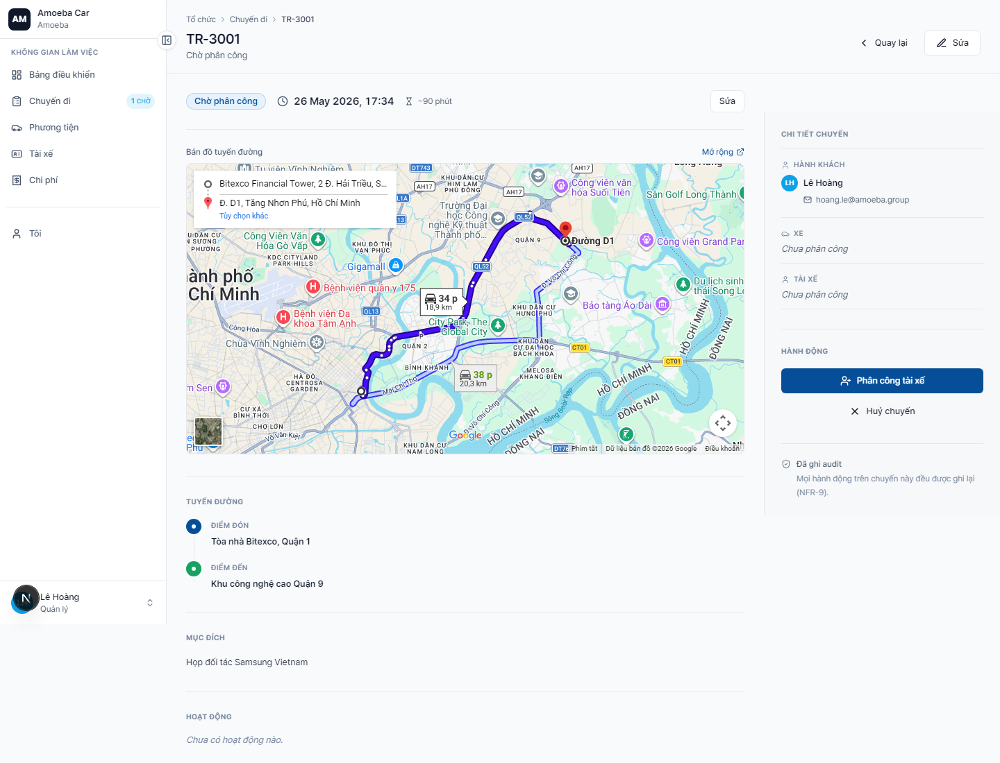
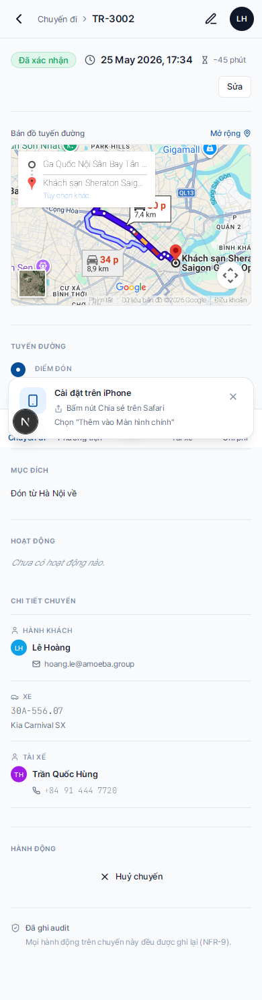

Theo dõi chuyến đi
- URL
/trips(danh sách) và/trips/[id](chi tiết)- Phạm vi
- Chỉ chuyến do bạn tạo hoặc bạn là hành khách
Danh sách chuyến của tôi

Trang /trips hiển thị toàn bộ chuyến của bạn theo thứ tự thời gian khởi hành mới nhất. Mỗi dòng có:
- Mã chuyến (TR-3001…)
- Tuyến (điểm đón → điểm đến)
- Ngày + giờ khởi hành
- Xe + tài xế (nếu đã gán)
- Nhãn trạng thái (Chờ phân công / Chờ tài xế / Đã xác nhận / Đang đi / Hoàn tất / Hủy)
Bộ lọc trên cùng cho phép lọc theo:
- Trạng thái (đa chọn)
- Khoảng ngày
- Xe / tài xế
- Từ khoá (tìm theo địa chỉ hoặc mục đích)
Chi tiết chuyến

Trang chi tiết hiển thị:
- Bản đồ tuyến đường (Google Embed)
- Thông tin cơ bản — pickup, dropoff, thời gian, mục đích, ghi chú
- Điểm ghé (nếu có)
- Người + xe — passenger, driver, vehicle, plate
- Lịch sử trạng thái — ai đã tạo / gán / xác nhận / bắt đầu / kết thúc
- Nút hành động dưới cùng (xem dưới)
Hành động bạn được làm
| Trạng thái chuyến | Hành động |
|---|---|
| Chờ phân công · Chờ tài xế · Đã xác nhận (chưa chạy) | ✅ Hủy chuyến (cần ghi lý do) |
| Đang đi · Hoàn tất · Đã hủy · Bị từ chối | ❌ Chỉ xem, không sửa được |
| Bất kỳ trạng thái nào | 📝 Cập nhật ghi chú (không sửa data chính) |
Đặc biệt: chuyến bạn là hành khách
Nếu một Admin/Quản lý khác đặt chuyến cho bạn (TR-3002), bạn vẫn thấy chuyến đó trong danh sách. Nhưng bạn không có quyền hủy — chỉ người tạo chuyến hoặc Admin mới hủy được.

📱
Trên điện thoại, danh sách hiển thị dạng card cuộn dọc, nút "Hủy chuyến" nằm cuối trang chi tiết.